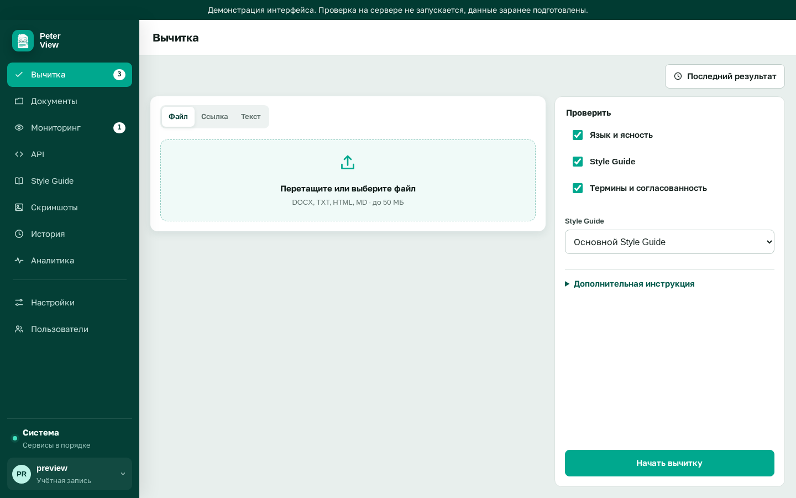
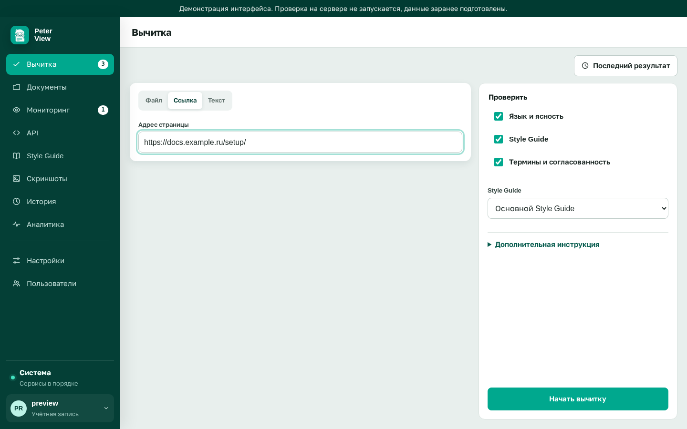
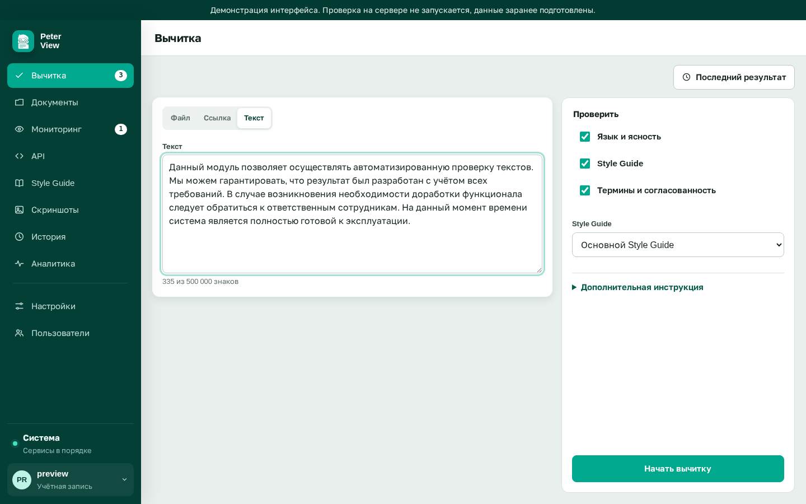
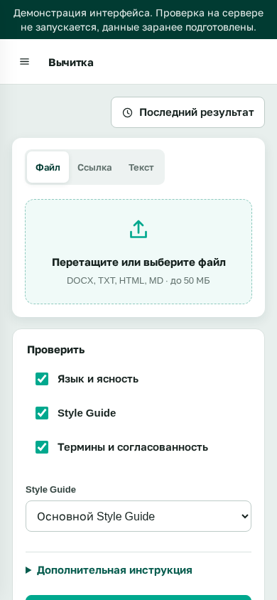
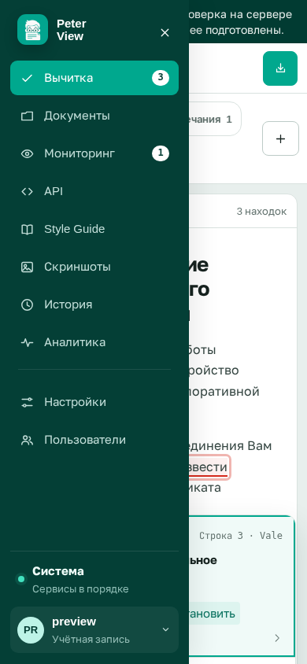

Проверка текста, файла и веб-страницы¶
На этой странице описано, как подать текст на проверку и что от этого зависит. Она нужна редактору и автору, которые работают в разделе Вычитка. Здесь приведены три способа загрузки входа с их лимитами, группы проверок с составом каждой, поле разовой инструкции, ход выполнения задачи и границы того, что проверка не находит.
Страница отвечает на вопросы: что можно проверить, чем файл отличается от ссылки, какие переключатели включить и почему результат приходит не сразу. Как читать полученный отчет, описано в Разборе замечаний, а из чего складывается работа движков находится в разделе Архитектура.
Способы подачи текста¶
Сервис принимает текст тремя способами: файл, адрес веб-страницы и вставка с клавиатуры. Все три способа попадают в одну очередь задач, и результат выглядит одинаково. Различаются лимиты и то, какая структура текста доходит до проверки.

Файл¶
Выберите вкладку Файл и перетащите файл в зону загрузки либо укажите его через диалог выбора. Принимаются форматы DOCX, TXT, HTML и MD. Размер одного файла ограничен 50 МБ.

Формат DOCX читается вместе со структурой: заголовки, списки, таблицы и выделенный текст сохраняются в отчете, и замечание указывает на конкретный блок. Формат PDF не поддерживается. Если нужно проверить PDF, сначала сконвертируйте его в DOCX и загрузите результат.
Сервис отклоняет файл в трех случаях: расширение не соответствует содержимому (архив zip, названный docx), размер превышает лимит, из файла не удалось извлечь читаемый текст.
Адрес веб-страницы¶
Выберите вкладку Ссылка и укажите полный адрес, начинающийся с http://
или https://. Сервис скачает страницу один раз и проверит ее текст.

Проверяется одна страница, а не весь сайт. Если нужно пройтись по разделу, заведите несколько ссылок или воспользуйтесь разделом Наблюдение, который умеет регулярный обход и сравнение версий.
Страница загружается сервером, а не вашим браузером. Поэтому адрес должен быть доступен тому хосту, где работает backend. Внутренние корпоративные сайты по умолчанию доступны, поскольку политика защиты от обращений в приватные сети настроена администратором. Раздел интранета, закрытый от сервера, проверить не удастся: вместо текста в отчете появится сообщение о том, что страницу не удалось загрузить. Политика доступа к сетям описана в разделе Архитектура на странице Механизмы защиты.
Текст с клавиатуры¶
Выберите вкладку Текст и вставьте фрагмент в поле ввода. Лимит составляет 500 000 знаков, счетчик показывает остаток. Способ подходит для отдельного абзаца, письма или описания релиза.

Форматирование при этом способе теряется: в отчете будет плоский текст, и замечания ссылаются только на строки. Если важна структура документа, загрузите файл.
Форма приспособлена и к узким экранам. На ширине меньше 880 пикселей боковое меню прячется за кнопку-бургер, панели вычитки становятся одна под другой, и поле ввода занимает всю ширину.

Нажатие на бургер раскрывает меню поверх контента. Пункты Вычитка, Документы, Мониторинг и остальные остаются теми же, что и на широком экране, а вверху виден индикатор состояния системы.

Группы проверок¶
Состав проверок задается тремя переключателями. Назначение групп и движки, которые в них работают, приведены в таблице ниже.
| Группа | Что находит | Какие движки работают |
|---|---|---|
| Язык и ясность | опечатки, грамматика, пунктуация, канцелярит, длинные предложения, пассив, антропоморфизм | LanguageTool, Vale, морфологические проверки, воркер модели Язык |
| Style Guide | нарушения правил вашего Стайл гайда и словаря терминов | воркер модели Style Guide поверх выбранного гайда, детерминированный поиск по лексикону |
| Термины и согласованность | противоречия внутри текста и с фактами гайдов, расхождение терминов | воркеры модели Структура, Терминология, Согласованность |
Хотя бы одна группа обязательна, иначе сервис не примет задачу. Если языковая модель не настроена, две последние группы работают частично. Детерминированная часть сохраняется, а пропуски модели не выполняются, и в отчете появляется пометка о неполноте проверки.
При включенной группе Style Guide в форме появляется выпадающий список гайдов. По умолчанию подставляется гайд, выбранный вами в профиле, а список позволяет разово взять другой. Порядок создания и выбора гайдов описан на странице Style Guide.
Разовая дополнительная инструкция¶
Блок Дополнительная инструкция принимает до 4000 знаков одноразового указания модели. Пример такого указания: «проверь, что все команды запускаются от имени обычного пользователя, а не от root».
Инструкция добавляется к выбранному гайду и действует только на текущую задачу. Формулировка должна быть короткой и проверяемой. Длинное и размытое указание увеличивает долю отклонений от базовых правил гайда, потому что модель начинает приоритизировать его вместо норм.
Ход выполнения проверки¶
После нажатия кнопки Проверить страница показывает прогресс задачи. Сначала становится доступна быстрая часть, то есть формальные движки. Затем модель читает текст частями, и по каждой части в реальном времени обновляется карточка воркера.
У карточки воркера виден статус и поток находок. Статусы означают следующее: пишет это выполнение запроса, нашел N это N замечаний, чисто это завершенный пропуск без находок, ошибка это сбой воркера.
Кнопка Вернуться отменяет наблюдение за прогрессом, но не отменяет саму задачу. Она досчитается в фоне, а результат появится в разделе История.
Обычная проверка текста объемом от 10 до 20 тысяч знаков занимает от полуминуты до нескольких минут. Точное время зависит от размера документа и отзывчивости подключенной модели. Если задача долго стоит на одном воркере, администратору стоит посмотреть раздел Система и нажать Проверить подключение в разделе Настройки.
Лимиты¶
Свод числовых ограничений проверки приведен в таблице ниже.
| Параметр | Значение |
|---|---|
| Размер файла | до 50 МБ |
| Размер вставляемого текста | до 500 000 знаков |
| Дополнительная инструкция | до 4000 знаков |
| Загрузка по адресу | одна страница, размер ответа до 10 МБ |
| Время жизни задачи | до 900 секунд, затем ошибка |
| Одновременные прогоны формальных движков | до 3 на весь сервер |
Все лимиты, кроме размера вставляемого текста, настраиваются переменными окружения. Перечень переменных находится в Implementation Guide на странице Переменные окружения.
Что проверка не находит¶
Ниже перечислены ограничения, о которых стоит знать до того, как отчет будет признан полным.
- Факты из внешнего мира не проверяются. Если в тексте написано, что сервер держит 100 000 подключений, а фактически их 500, замечания не будет, потому что такая норма не записана в гайде.
- Текст, изображенный на картинке, не виден. Он проверяется только в том случае, если загружен отдельным файлом.
- Корректность кода в примерах не оценивается. Проверяются формулировки вокруг примера, а не то, что пример действительно работает.
Связанные разделы¶
Страницы, которые продолжают тему подачи текста на проверку.
- Разбор замечаний как читать отчет по результатам проверки.
- Style Guide как составить гайд, по которому работает соответствующая группа.
- История проверок и аналитика где искать результат задачи, наблюдение за которой было отменено.
- Наблюдение за страницами регулярная проверка живых страниц вместо разовой загрузки по ссылке.
- Устранение неполадок на стороне интерфейса действия при зависшей или упавшей задаче.
- Общая архитектура путь текста от отправки до отчета.